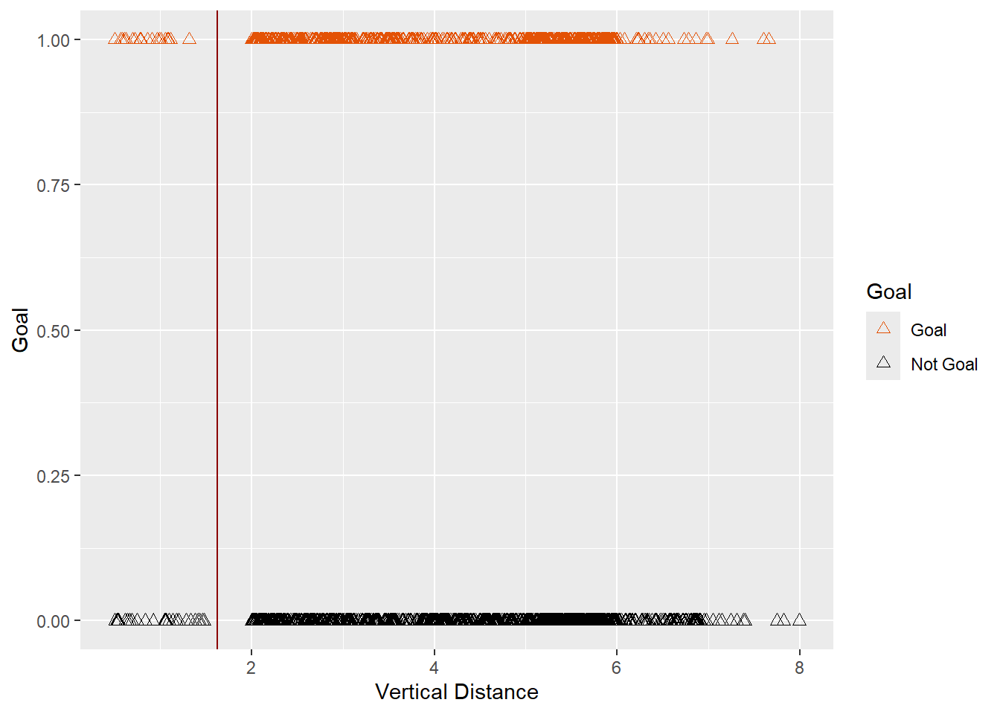
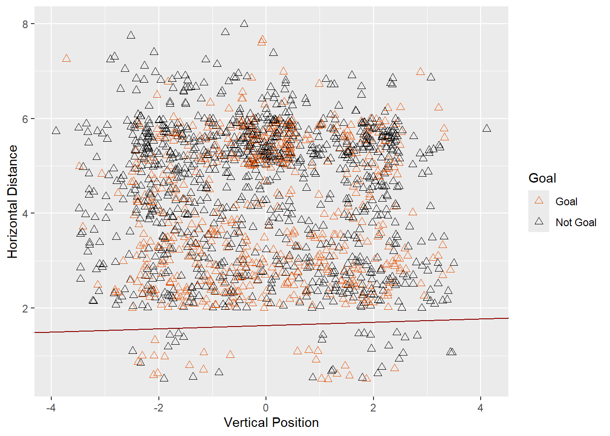
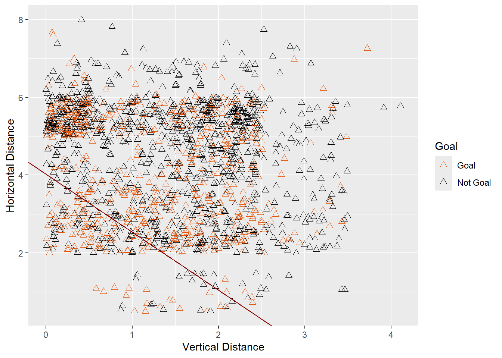

library(tidyverse)Module 3.2: Logistic Regression
Issue with KNN
In the last notes, we discussed how to use KNN to classify points. There are several issues with this method, some of which we already discussed
- Choosing an optimal K can involve a lot of trial and error
- The final model doesn’t really reveal much about how the individual predictors affect the outcome (it’s kind of a “black box”).
- It’s hard to incorporate qualitative predictors in meaningful ways.
- Unlike regression models, there is no natural way to estimate the probability of belonging to a class, only a hard prediction
Let’s expand on these. To see why 2 is an issue, think back to Module 2. When we fit a multiple regression model, we were able to say which predictors were significant. There is no way to do that with KNN, so while it might be a good predictive model in some scenarios, it doesn’t give us much in the realm of inference. Sure, if we only have two predictors, we can look at a plot of the decision regions, but such plots can be too holey and unpredictable for my taste. For issue 3, KNN relies on being able to calculate the “distance” between points which isn’t so well defined for categories. If two data points have the same value of a category but are 5 units a part in a numeric variable, how should this compare with two data points that have different categories but are only 1 unit apart1? Weird.
For the rest of these notes, we are going to assume that our response variable \(Y\) is binary and denote its values as 0 and 1. We will develop the idea of logistic regression using a single predictor \(X\) for simplicity, but will look at some examples using \(p> 1\) predictors later in the notes.
Logistic Regression
Logistic regression, which despite the name is a classification method, takes a more inferential and quantitative approach to the problem. Instead of trying to directly classify points as 0s or 1s for new X, it tries to build a model for the probability of being in class 1 (or 0) and then classifies new points as 1 (or 0) if this probability is \(> 0.5\). In other words, we set \(p(X) = P(Y=1 | X)\) (the probability of getting a 1 for a given predictor value \(X\)) and call this the “success probability”.
Our goal will be to fit a model to \(p(X)\) instead of \(Y\) itself. We could try for \[p(X) = \beta_0 + \beta_1 X\] (i.e. an SLM with \(p\) as the outcome), but that would lead to values of \(p\) outside [0,1]. \(p\) is supposed to be a probability so that is bad.
Instead, a generalized linear model (GLM) is one which adds another function \(h\) into the equation and seeks to fit the model: \[p(X) = h(\beta_0 + \beta_1 X) \]
where \(h\) is called the inverse link function2. \(h\) should have the property that it has a range in \([0,1]\) so that it can convert our potentially nonsensical probabilistic values \(\beta_0 + \beta_1 X\) into probabilities. One common choice is the logistic function \[h(x) = 1/(1+e^{-x})\] whose plot is shown in the slider-app below (using the default \(\beta_0 = 0, \beta_1 = 1\)). Notice that it approaches \(0\) as \(x\) gets smaller and approaches 1 as \(x\) gets bigger, crossing \(1/2\) when \(x=0\).
We can also look at the plot of the probabilities \[p(X) = h(\beta_0 + \beta_1 X)= \frac{1}{1 + e^{-(\beta_0 + \beta_1 X)}}\] vs \(X\) changes as we change \(\beta_0, \beta_1\)
#| '!! shinylive warning !!': |
#| shinylive does not work in self-contained HTML documents.
#| Please set `embed-resources: false` in your metadata.
#| standalone: true
#| viewerHeight: 400
library(shiny)
library(ggplot2)
ui <- fluidPage(
sliderInput("beta0", "β₀ (beta0):", min = -5, max = 5, value = 0, step = 0.1),
sliderInput("beta1", "β₁ (beta1):", min = -5, max = 5, value = 1, step = 0.1),
plotOutput("logisticPlot", width = "400px", height = "200px")
)
server <- function(input, output) {
output$logisticPlot <- renderPlot({
logistic_func <- function(x, beta0, beta1) {
1 / (1 + exp(-(beta0 + beta1 * x)))
}
x_vals <- seq(-10, 10, by = 0.1)
y_vals <- logistic_func(x_vals, input$beta0, input$beta1)
ggplot() +
geom_line(data = data.frame(x = x_vals, y = y_vals),
aes(x = x, y = y))
})
}
shinyApp(ui = ui, server = server)I encourage you to play around with a few different values of these paramaters to get some ideas about what is going on. In particular, try to answer the following:
- How does changing \(\beta_0\) affect the shape?
- How does changing \(\beta_1\) affect the shape?
- If \(p(x)\) tends to decrease with \(x\), what could we say about the parameters?
The sliders below also allow you to see how the logistic graph matches up with the empirical probability of making a shot as a function of vertical distance form the goal in the shots dataset. See if you can choose \(\beta_0, \beta_1\) to capture the basic shape.
#| '!! shinylive warning !!': |
#| shinylive does not work in self-contained HTML documents.
#| Please set `embed-resources: false` in your metadata.
#| standalone: true
#| viewerHeight: 400
library(shiny)
library(ggplot2)
library(dplyr)
shots <- read.csv("https://raw.githubusercontent.com/jmayberr/math133-stat-learning-fall2026/refs/heads/main/Datasets/womenShots.csv")
ui <- fluidPage(
sliderInput("beta0", "β₀ (Intercept):", min = -5, max = 5, value = 0, step = 0.1),
sliderInput("beta1", "β₁ (Slope):", min = -5, max = 5, value = 1, step = 0.1),
plotOutput("logisticPlot", width = "400px", height = "200px")
)
server <- function(input, output) {
output$logisticPlot <- renderPlot({
logistic_func <- function(x, beta0, beta1) {
1 / (1 + exp(-(beta0 + beta1 * x)))
}
x_vals <- seq(0, 8, by = 0.1)
y_vals <- logistic_func(x_vals, input$beta0, input$beta1)
shots_binned <- shots |>
group_by(y) |>
summarize(prop_goal = mean(Goal == "Goal"))
ggplot() +
geom_line(data = data.frame(x = x_vals, y = y_vals),
aes(x = x, y = y),
color = "red2", linewidth = 1) +
geom_bar(data = shots_binned,
aes(x = y, y = prop_goal),
stat = "identity", fill = "steelblue",
color = "white", alpha = 0.6, width = 1) +
labs(title = paste("Logistic Regression: β₀ =", input$beta0,
", β₁ =", input$beta1),
x = "Vertical Distance", y = "Proportion of Goals")
})
}
shinyApp(ui = ui, server = server)Alright enough fun. Let’s fit this shit to our data.
Logistic Model on Water Polo Data
To fit a logistic model to shot probabilities on the water polo data using vertical distance (yj) as a predictor, we use the glm function in R with the family = “binomial” option. The response variable needs to be recoded as 0/1 or F/T first3
url="https://raw.githubusercontent.com/jmayberr/math133-stat-learning-fall2026/refs/heads/main/Datasets/womenShots.csv"
shots=read.csv(url)
shots$Goal_1=ifelse(shots$Goal=="Goal",1,0)
goal_glm=glm(Goal_1~yj,family="binomial",data=shots)
summary(goal_glm)
Call:
glm(formula = Goal_1 ~ yj, family = "binomial", data = shots)
Coefficients:
Estimate Std. Error z value Pr(>|z|)
(Intercept) 0.33841 0.15608 2.168 0.0301 *
yj -0.20722 0.03527 -5.875 4.24e-09 ***
---
Signif. codes: 0 '***' 0.001 '**' 0.01 '*' 0.05 '.' 0.1 ' ' 1
(Dispersion parameter for binomial family taken to be 1)
Null deviance: 2116.2 on 1606 degrees of freedom
Residual deviance: 2081.1 on 1605 degrees of freedom
AIC: 2085.1
Number of Fisher Scoring iterations: 4Don’t freak out! Let’s talk about this output. The two values in the “Estimate” column are the coefficients \(\hat{\beta}_0, \hat{\beta}_1\) in the model \[p(X) = h(\beta_0 +\beta_1 X)\] with \(X=yj\). If we want to predict the probability of making a shot from four metters back, for example, we would plug \(X= 4\) into the right hand side of this equation:
bx=0.33841 +(-0.20722)*4
1/(1+exp(-bx))[1] 0.3797829You can also use the predict function with type = "response", to get the probability directly:
new_df=data.frame(yj=4)
predict(goal_glm,new_df,type="response") 1
0.3797826 We’ll talk more about interpreting coefficients in the next section, but a few things are worth noting here. First, the p-value in the yj row can be interpreted in the same way as the p-values from our earlier lm outputs; the variable yj has a significant relationship with goal scoring probabilities! What type of relationship? Well, recalling from earlier how \(\beta_1\) impacts the graph of the logistic equation and noting that our estimate here is negative, we can say that the probability of making a shot tends to decrease as we increase yj. If the coefficient was positive, we would say the opposite.
Logistic Regression, Decision Boundaries, and Prediction
After we have computed a logistic regression model, we can also use it to visualize the decision regions \(G\) and \(\bar{G}\). In our single variable model, \(G\) will be the region of \(X\) values where
\[P(Goal|X) > 0.5\]
You can solve for this explicitly using the equation \[1/(1+e^{-\beta_0 + \beta_1 x}) = 1/2\]
to get \[x = -\beta_0/\beta_1\]
Here is the threshold for predicting goal alongside the original data. All shots to the left of the red line would be predicted goals and all shots right would not.
beta0=coef(goal_glm)[1]
beta1=coef(goal_glm)[2]
threshold=-beta0/beta1
# Plot the decision boundary with the actual data
shots |>
ggplot(aes(x = yj, y = Goal_1, color = Goal)) +
geom_point(size = 2,shape=2) +
geom_vline(xintercept=threshold,color="darkred")+
labs(x="Vertical Distance",y="Goal",color = "Goal") +
scale_color_manual(values=c("#e35205","black"))
The decision boundary looks more interesting for two-variable models. For example, suppose we add in the \(x\)-coordinate of points and create a new model
goal_glm2=glm(Goal_1~xj+yj,data=shots,family="binomial")
summary(goal_glm2)
Call:
glm(formula = Goal_1 ~ xj + yj, family = "binomial", data = shots)
Coefficients:
Estimate Std. Error z value Pr(>|z|)
(Intercept) 0.337554 0.156129 2.162 0.0306 *
xj 0.007154 0.031643 0.226 0.8211
yj -0.206886 0.035306 -5.860 4.63e-09 ***
---
Signif. codes: 0 '***' 0.001 '**' 0.01 '*' 0.05 '.' 0.1 ' ' 1
(Dispersion parameter for binomial family taken to be 1)
Null deviance: 2116.2 on 1606 degrees of freedom
Residual deviance: 2081.0 on 1604 degrees of freedom
AIC: 2087
Number of Fisher Scoring iterations: 4Now if we denote our two predictors as \(X,Y\) (to correspond with our usual labeling of axes in two-dimensions and coincidentally, the two predictors in our water polo example) the decision boundary is the equation
\[\beta_0 + \beta_1 X + \beta_2 Y = 0\] or equivalently \[Y = -\beta_0/\beta_2 + (-\beta_1/\beta_2) X.\]
In the figure below, this equation is represented by the red line. Shots from below the line would be classified as goals and those above as misses:
beta0=coef(goal_glm2)[1]
beta1=coef(goal_glm2)[2]
beta2=coef(goal_glm2)[3]
shots |>
ggplot(aes(x = xj, y = yj, color = Goal)) +
geom_point(size = 2,shape=2) +
geom_abline(slope = -beta1/beta2,intercept = -beta0/beta2,color="darkred") +
labs(x="Vertical Position",y="Horizontal Distance",color = "Goal") +
scale_color_manual(values=c("#e35205","black"))
Note however that xj wasn’t significant. This is probably because it represents relative position and not horizontal distance. If we use absolute value instead, we get a better model and a more reasonable decision boundary:
goal_glm3=glm(Goal_1~abs(xj)+yj,data=shots,family="binomial")
summary(goal_glm3)
Call:
glm(formula = Goal_1 ~ abs(xj) + yj, family = "binomial", data = shots)
Coefficients:
Estimate Std. Error z value Pr(>|z|)
(Intercept) 0.97473 0.19288 5.054 4.34e-07 ***
abs(xj) -0.36053 0.06217 -5.800 6.65e-09 ***
yj -0.24183 0.03629 -6.664 2.66e-11 ***
---
Signif. codes: 0 '***' 0.001 '**' 0.01 '*' 0.05 '.' 0.1 ' ' 1
(Dispersion parameter for binomial family taken to be 1)
Null deviance: 2116.2 on 1606 degrees of freedom
Residual deviance: 2046.3 on 1604 degrees of freedom
AIC: 2052.3
Number of Fisher Scoring iterations: 4beta0=coef(goal_glm3)[1]
beta1=coef(goal_glm3)[2]
beta2=coef(goal_glm3)[3]
shots |>
ggplot(aes(x = abs(xj), y = yj, color = Goal)) +
geom_point(size = 2,shape=2) +
geom_abline(slope = -beta1/beta2,intercept = -beta0/beta2,color="darkred") +
labs(x="Vertical Distance",y="Horizontal Distance",color = "Goal") +
scale_color_manual(values=c("#e35205","black"))
Testing Set Validation and Stratified Sampling
To compute the predictive power of this or any other glm model, we can do our usual test set validation:
n=nrow(shots)
s=sample(n,0.7*n)
train_set=shots[s,]
test_set=shots[-s,]
goal_train=glm(Goal_1~abs(xj)+yj,family="binomial",data=train_set)
test_set$prob = predict(goal_train,
newdata = test_set,
type = "response")
test_set$prediction = ifelse(test_set$prob > 0.5,
"Goal",
"Not Goal")
er_logistic=sum(test_set$prediction!=test_set$Goal)/length(test_set$Goal)
er_logistic[1] 0.3581781For those of you who did the last practice problems, this should be close to the best knn model error rates you got (although it still doesn’t beat the null model).
When the classes of our outcome are imbalanced (meaning far fewer of one possible class than the other) and the sample size is small, the usual procedure can lead to issues because we might not have enough observations from each class in our test set. For example, if you have a dataset of size 200 and only 20 are from a specific class A, all 20 could potentially end up in the training set and then we’re in trouble! In such situations, reflecting class imbalance in our split can be desirable.
Many machine learning packages use what’s called stratified sampling to choose training-testing splits. This process selects proportionate samples from all possible classes of the outcome to form the training and testing sets.
We can perform stratified sampling on the water polo dataset, for example, by modifying our typical algorithm as follows:
n0 = sum(shots$Goal_1 == 0) # Number of class 0
n1 = sum(shots$Goal_1 == 1) # Number of class 1
s0 = sample(which(shots$Goal_1 == 0), 0.7 * n0) # Training data indices for 0s
s1= sample(which(shots$Goal_1 == 1), 0.7 * n1) # Training data indices for 1s
s = c(s0, s1) # Combine 0s and 1s for training indices
train = shots[s, ]
test = shots[-s, ]Now all the training and testing sets have roughly the same fraction of goals as the original data:
sum(shots$Goal_1==1)/n[1] 0.3690106sum(train$Goal_1==1)/nrow(train)[1] 0.3692171sum(test$Goal_1==1)/nrow(test)[1] 0.36853My advice would be to definitely use stratified sampling when there is more than an 80-20 imbalance and consider using it if it is more than 60-40 and the dataset is small. The water polo dataset is large and the imbalance is about 63-37 so it probably isn’t necessary. For example, in our previous test_set where we didn’t stratified, we ended up with a reasonable fraction of goals anyways:
sum(test_set$Goal=="Goal")/nrow(test_set)[1] 0.3561077However, in the practice problems below it will make more of a difference because the class imbalance is larger.
What else we need to say
To summarize these notes,
- The logistic model finds a function \(h(\beta_0 + \beta_1 X)\) for the probability that our response \(Y=1\) when our predictor is \(X\).
- This function helps reveal important information about the relationships between our predictors and the outcome. For example, a negative coefficient \(\beta_1\) means that the probability of a 1 decreases as we increase \(X\).
- We can add additional predictors and similarly interpret their coefficients in terms of their relationship with the success probability.
- We predict successes when the predicted probability is above 0.5.
In the next section, we’ll delve a little deeper into the interpretation of the coefficients and the evaluation of classification models in more detail. For example, why should we use 0.5 as a cutoff for class predictions? Since the classes Goal and Not Goal are imbalanced with roughly twice as many of the latter, could we actually do better by using a different cutoff? Furthermore, we haven’t look at the types of misclassifications. If we actually create a two-way table of predictions vs reality for our Goals:
table(test_set$prediction,test_set$Goal)
Goal Not Goal
Goal 26 27
Not Goal 146 284we see that there are two types of errors: predicting goal for not goal and predicting not goal for goal.The second type of error is happening much more frequently. Is this desirable? Next notes we’ll talk about these two way confusion matrices in more detail and some other metrics one can use to talk about to assess the value of a classification scheme. Until then, love the ones you’re with.
Practice
The framingham dataset contains information from a study in Framingham, MA on cardiovascular heart disease. You can view more information about the data here Download this data and remove all subjects with missing data using the drop_na() command.
- Create a 70-30 training-testing split for the data. Bonus: Use stratified sampling.
- Fit a logistic regression model to the training set using the variable TenYearCHD as the response and all the other variables as predictors.
- Which variables were significant predictors of CHD in your model from 2? Looking at the signs of the coefficients, discuss how the odds of getting CHD depends on each of the significant predictors (eg. The odds of getting CDH are expected to increase as variable \(x\) increases.)
- What was the accuracy of your model on the test set? How does it compare with the null model?
Footnotes
Ok, there is a method of computing distances in the presence of mixed quantitative/qualitative predictors called Gower Distance - I’ll leave it to you to go down that rabbit hole if you want to take the red pill.↩︎
Why inverse you ask? You shall see in Section 3.3…↩︎
That’s just the way
glmworks with binary variables. It will take other qualitative variables as predictors, but not a response.↩︎